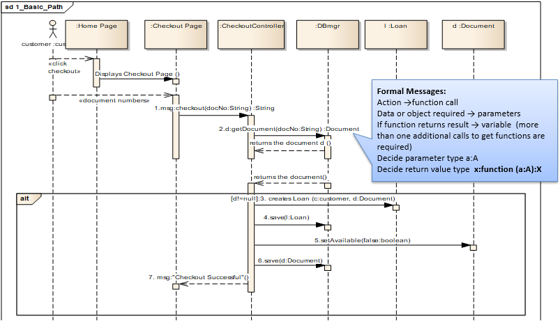
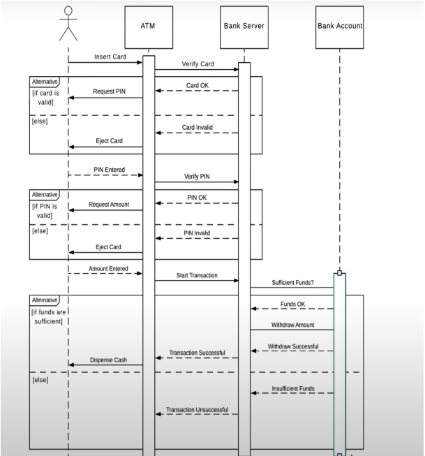
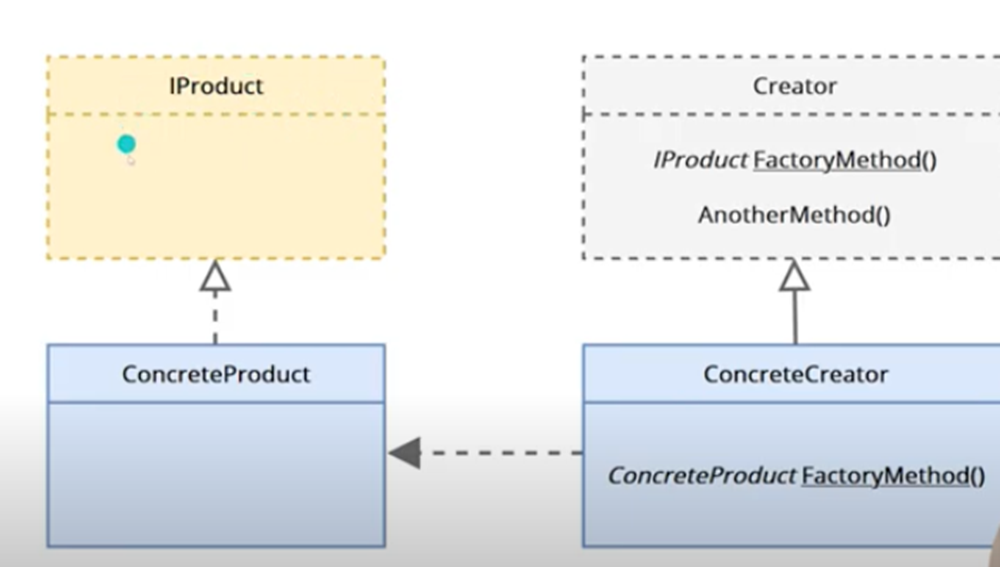
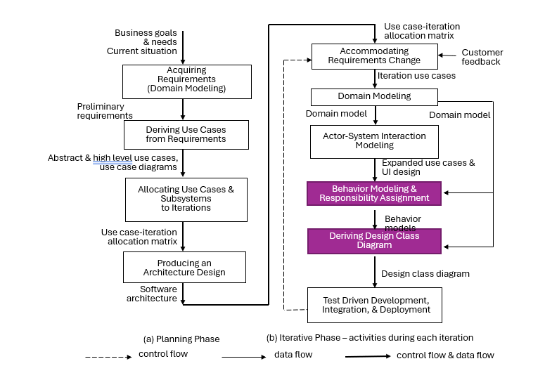

Object-Oriented Development Stages:
Programming Paradigms Comparison:
| Paradigm | Description | Example |
|---|---|---|
| Functional | Uses functions as mathematical expressions; outputs depend on inputs. | Factorial function |
| Logical | Uses predicates and clauses with propositional calculus. | Factorial predicate |
| Procedural | Encapsulates instructions into procedures to avoid repetition. | Procedures in assembly-like languages |
Key Concepts in Object-Oriented Code:
Employee employee = new PartTime();
employee.getSalary();
employee is an instance of PartTime, demonstrating a matching method.OO Design Process Steps:
Class Structure in C#:
Messages & Signature:
Types of Relationships:
| Relationship | Description | Example |
|---|---|---|
| Association | Weak connection; objects maintain individual lifecycles. | Group of unrelated objects |
| Aggregation | Specialized association; objects have independent lifecycles but a parent-child ownership. | Department with employees |
| Composition | Strong form of aggregation; child objects' lifecycle depends on the parent. | House and rooms |
Association:
public class Student
{
public string Name { get; set; }
public Student(string name) => Name = name;
}
public class Teacher
{
public string Name { get; set; }
public void Teach(Student student) =>
Console.WriteLine($"{Name} teaches {student.Name}");
}
// Usage
var student = new Student("Alice");
var teacher = new Teacher { Name = "Mr. Smith" };
teacher.Teach(student);
Aggregation:
public class Book
{
public string Title { get; set; }
public Book(string title) => Title = title;
}
public class Library
{
public List<Book> Books { get; } = new List<Book>();
public void AddBook(Book book) => Books.Add(book);
}
// Usage
var library = new Library();
library.AddBook(new Book("C# Programming"));
Composition:
public class Room
{
public string Name { get; set; }
public Room(string name) { Name = name; }
}
public class House
{
private List<Room> Rooms = new List<Room>();
public void AddRoom(Room room) => Rooms.Add(room);
}
Abstraction: focuses on showing only essential features of an object and hiding unnecessary details. For example, modeling a BankAccount class instead of a specific account. Abstraction allows a general view of how an object should behave without including the exact specifics.
abstract class Shape {
public abstract double Area();
}
// OR
public class BankAccount
{
private decimal balance;
public decimal Balance { get => balance; private set => balance = value; }
public void Deposit(decimal amount) => balance += amount;
public void Withdraw(decimal amount) => balance -= amount;
}
Encapsulation: wraps attributes and methods into objects, hiding internal details and only exposing what’s necessary. This prevents external entities from changing an object’s internal state directly, fostering information hiding and improving modularity.
class Employee {
private string Name { get; set; }
}
Inheritance: allows the creation of new classes that reuse, extend, or modify behaviors of existing classes. For instance, a Convertible class can inherit characteristics from a more general Car class, thus establishing a natural hierarchy and promoting code reuse.
class Employee {
public string Name { get; set; }
}
class Manager : Employee {
public double Salary { get; set; }
}
Polymorphism: enables objects to respond differently to the same method call, depending on their specific types. For example, a calculateInterest method may calculate interest differently for SavingsAccount and ChequeAccount classes.
// Example: Account base class with polymorphic CalculateInterest
public abstract class Account
{
public abstract decimal CalculateInterest();
}
public class SavingsAccount : Account
{
public override decimal CalculateInterest() => 0.03m; // 3% interest
}
public class CheckingAccount : Account
{
public override decimal CalculateInterest() => 0.01m; // 1% interest
}
| Type of Polymorphism | Description | Example |
|---|---|---|
| Static (Compile-time) | Uses method overloading; the method called is determined at compile-time. | Overloaded methods for calculations |
| Dynamic (Runtime) | Uses method overriding; the specific method called is decided at runtime. | Employee salary calculation override |
Static Polymorphism:
public class Printer
{
public void Print(string text) => Console.WriteLine(text);
public void Print(int number) => Console.WriteLine(number);
}
Dynamic Polymorphism:
public class Base
{
public virtual void Display() => Console.WriteLine("Base Display");
}
public class Derived : Base
{
public override void Display() => Console.WriteLine("Derived Display");
}
Guidelines for Inheritance:
Unified Modeling Language (UML) offers multiple diagrams that visually represent different aspects of a system. Each diagram type has a unique role, as summarized below:
| UML Diagram | Purpose |
|---|---|
| Use Case Diagram | Illustrates how the system interacts with external entities (users or other systems). |
| Class Diagram | Defines system classes and their relationships, showing data structure. |
| Collaboration Diagram | Details interactions between objects to perform a task. |
| Sequence Diagram | Shows the order of messages between objects in a particular process. |
| State Diagram | Tracks the states an object goes through in its lifecycle. |
| Package Diagram | Organizes classes into packages or modules. |
| Component Diagram | Shows the dependencies and relationships among software components. |
| Deployment Diagram | Describes the physical deployment of software artifacts. |
Creating a Sequence Diagram involves the following steps:

Activity Diagrams model the flow of control or data in a process. Here are key elements:

Definition: Design patterns are standardized solutions to common design problems encountered during software development. They serve as templates for how to solve recurring design challenges, enhancing communication among developers, supporting code reuse, and empowering beginners to understand established practices.
Representation: Usually illustrated with class or sequence diagrams.
Benefits:
Caution: Design patterns are not meant as shortcuts. Effective use requires genuine problem-solving skills.
Categories of GOF (Gang of Four) Design Patterns:
Purpose: The Singleton Pattern is designed to ensure that a class has only one instance and provides a global point of access to that instance. This is crucial in scenarios where a single resource is shared, such as logging, configuration management, or service proxies.
Examples of Use Cases:
Advantages:
Disadvantages:
C# Example:
public class Singleton
{
private static readonly Singleton instance = new Singleton();
// Private constructor ensures that an object is not instantiated from outside
private Singleton()
{
// Initialize any required resources here
}
// Public method to provide access to the instance
public static Singleton Instance
{
get { return instance; }
}
public void SomeOperation()
{
// Example method that uses the singleton instance
Console.WriteLine("Executing operation on singleton instance.");
}
}
Usage:
// Accessing the singleton instance and invoking a method
Singleton singletonInstance = Singleton.Instance;
singletonInstance.SomeOperation();
Example Image:
Purpose: The Factory Method Pattern provides an interface for creating objects in a superclass while allowing subclasses to modify the type of objects that will be created. This pattern promotes loose coupling by isolating the instantiation logic from the code that uses the objects.
Advantages:
C# Example:
public abstract class Product
{
public abstract string GetProductName();
}
public class ConcreteProductA : Product
{
public override string GetProductName() => "Product A";
}
public class ConcreteProductB : Product
{
public override string GetProductName() => "Product B";
}
public abstract class Creator
{
public abstract Product FactoryMethod();
}
public class ConcreteCreatorA : Creator
{
public override Product FactoryMethod() => new ConcreteProductA();
}
public class ConcreteCreatorB : Creator
{
public override Product FactoryMethod() => new ConcreteProductB();
}
// Client code
Creator creator = new ConcreteCreatorA();
Product product = creator.FactoryMethod();
Console.WriteLine(product.GetProductName()); // Output: Product A
Usage: This setup allows new product types to be introduced without altering existing code. For instance, if a new ConcreteProductC is added, only the new creator needs to be implemented.
Example Image:

Purpose: The Builder Pattern separates the construction of complex objects from their representation. This allows for the same construction process to create different representations, providing more control over the construction process, particularly when dealing with classes that have multiple parameters or states.
Context: This pattern is beneficial when:
Advantages:
Architecture:
C# Example:
public class Product
{
public string PartA { get; set; }
public string PartB { get; set; }
public override string ToString() => $"Product with {PartA} and {PartB}";
}
public interface IBuilder
{
void BuildPartA();
void BuildPartB();
Product GetResult();
}
public class ConcreteBuilder : IBuilder
{
private Product product = new Product();
public void BuildPartA() => product.PartA = "Part A";
public void BuildPartB() => product.PartB = "Part B";
public Product GetResult() => product;
}
public class Director
{
private IBuilder builder;
public Director(IBuilder builder)
{
this.builder = builder;
}
public void Construct()
{
builder.BuildPartA();
builder.BuildPartB();
}
}
// Client code
IBuilder builder = new ConcreteBuilder();
Director director = new Director(builder);
director.Construct();
Product product = builder.GetResult();
Console.WriteLine(product); // Output: Product with Part A and Part B
Example Image:
C# Example:
public interface IProductA
{
string GetName();
}
public interface IProductB
{
string GetDescription();
}
public class ConcreteProductA1 : IProductA
{
public string GetName() => "Concrete Product A1";
}
public class ConcreteProductB1 : IProductB
{
public string GetDescription() => "Concrete Product B1 Description";
}
public interface IFactory
{
IProductA CreateProductA();
IProductB CreateProductB();
}
public class ConcreteFactory1 : IFactory
{
public IProductA CreateProductA() => new ConcreteProductA1();
public IProductB CreateProductB() => new ConcreteProductB1();
}
// Client code
IFactory factory = new ConcreteFactory1();
IProductA productA = factory.CreateProductA();
IProductB productB = factory.CreateProductB();
Console.WriteLine(productA.GetName()); // Output: Concrete Product A1
Console.WriteLine(productB.GetDescription()); // Output: Concrete Product B1 Description
Purpose: Enables creating new objects by copying an existing object (the prototype).
Advantages:
Disadvantages:
Example (C#):
// Prototype Pattern
public interface IPrototype
{
IPrototype Clone(); // Method to clone the prototype
}
public class ConcretePrototype : IPrototype
{
public string Name; // Name property
public int Age; // Age property
public ConcretePrototype(ConcretePrototype source)
{
Name = source.Name;
Age = source.Age;
}
public IPrototype Clone() => new ConcretePrototype(this); // Clone method
}
Usage Scenarios:
| Pattern | Purpose | Advantages | Disadvantages |
|---|---|---|---|
| Singleton | Ensures a class has only one instance | Controlled access, simplified architecture | Difficult unit testing, limits parallelism |
| Factory Method | Creates objects without specifying the class type | Enhances extensibility, separates product creation | May lead to complex hierarchies |
| Builder | Step-by-step construction of complex objects | Flexibility, allows different representations | More complex implementation |
| Abstract Factory | Creates families of related objects | Encapsulates object creation | Can be complex to implement |
